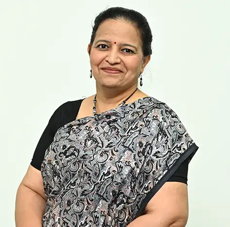
Prof. Shantini Aniruddha Bokil
HOD, Professor
Environmental and Sustainable Engineering M.E.Construction Management

HOD, Professor
Environmental and Sustainable Engineering M.E.Construction Management
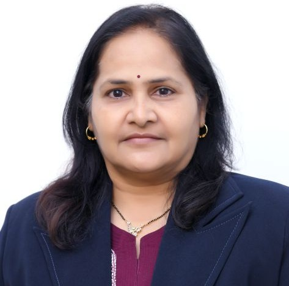
Professor
1. Structural Analysis and Design, Application of Finite element Method for structural design, RCC structures. 2. Digital Architecture, Engineering design of implants, prosthesis. Application of Digital Methods in Civil Engineering and…
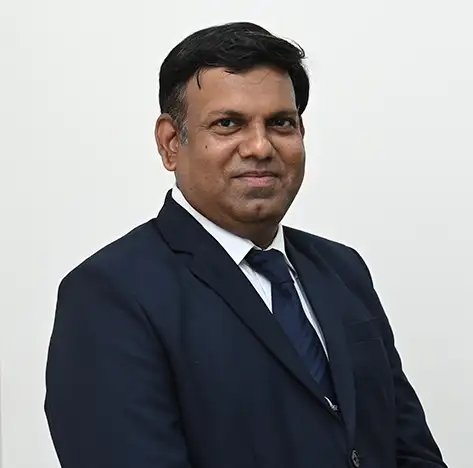
Professor
Professor in Civil Engineering, National tour, Industry-Institute, Discipline Coordinator, MIT WPU, Pune. LMISTE, LMSEA
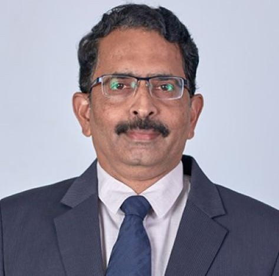
Professor
Prof. Sandeep Potnis has more than 35 years of teaching and industrial experience. He is Head of Tunnel Engineering program at MIT WPU. Seven research scholars are pursuing Ph.D. in Tunnel Engineering under his guidance. Three scholars…
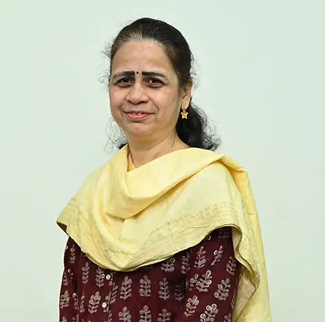
Associate Professor
Dr. Nivedita Gogate is currently working as an Associate Professor in the Department of Civil Engineering, Dr Vishwanath Karad MIT World Peace University, Pune from 2018. She joined the MIT-WPU in 1996 and since then she has been…
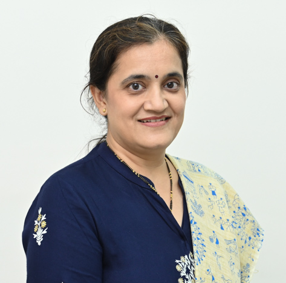
Assistant Professor
Prof. Vrunda Agarkar is working as an Assistant Professor at the Department of Civil Engineering at Dr. Vishwanath Karad MIT World Peace University, Pune. She is presently pursuing her PhD with SVNIT, Surat. She received her BE (Civil)…
Assistant Professor
1. Corrosion in reinforced concrete structures 2. Durability and service-life assessment of concrete 3. Sustainable and low-carbon concrete materials 4. Ultra-High-Performance Concrete (UHPC) 5. Microstructural and electrochemical…
Assistant Professor
1. Macro & Micro mechanics of concrete 2. The durability of concrete structures 3. Green building materials 4. Material optimization 5. Waste utilization and sustainability studies 6. Concrete composites
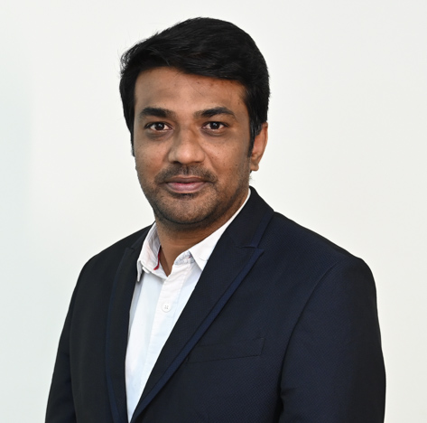
Assistant Professor
Prof. Dr. Shahbaz Dandin is an Assistant Professor in the Department of Civil Engineering at MIT WPU, Pune, India. He completed his B.E in Civil Engineering from VTU, Belgaum in 2012, M.Tech in Geotechnical Engineering from Govt.…
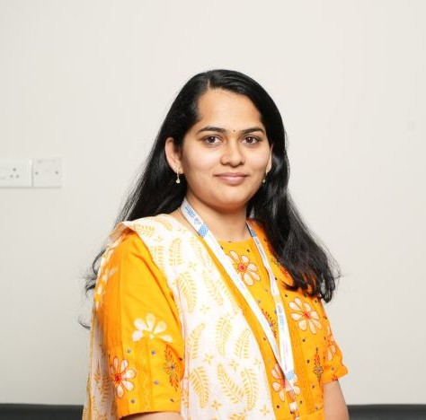
Assistant Professor
Dr. Manali Joshi is an Assistant Professor in the Department of Civil Engineering at MIT-WPU, Kothrud, Pune. She has over 5+ years of total experience, including 3 years of experience in teaching and 2+ years of experience in industry,…
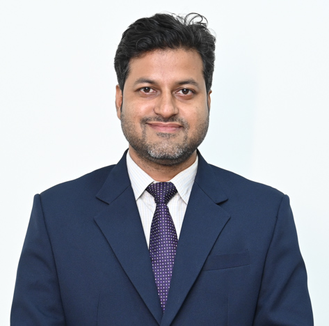
Assistant Professor
Transportation materials, Warm Mix Asphalt, Parking Policy and Demand Studies
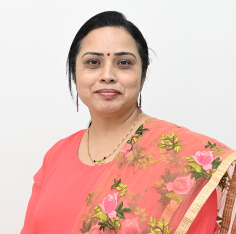
Assistant Professor
Prof. Dr. Ketaki Kulkarni is an esteemed Assistant Professor in the Department of Civil Engineering at MIT WPU, Pune. She graduated from Government College of Engineering, Aurangabad in Civil Engineering in the year 2003, and then…
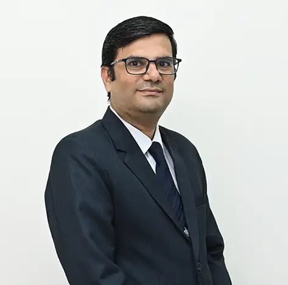
Assistant Professor
Structural Engineering, Precast concrete, Structural Health Monitoring
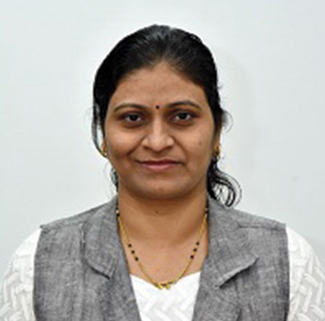
Assistant Professor
Dr. Sandhya Mathapati is working as an Assistant Professor in the Department of Civil Engineering at MIT-WPU, Pune. She has over 19 + years’ academic & industrial experience. She completed her Ph.D. in the Civil Structural Engineering in…
Assistant Professor
Construction Management, Ferrocement , Sustainable construction
Assistant Professor
Dr. Lipsa Mishra is an Assistant Professor in the Department of Civil Engineering at Dr. Vishwanath Karad MIT World Peace University, Pune from September 2024. She completed her B. Tech in Civil Engineering from KIIT Deemed to be…
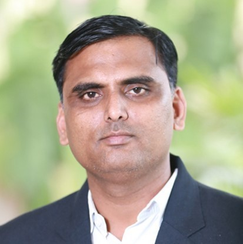
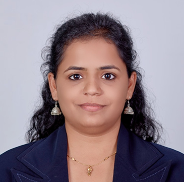
Assistant Professor
Dr. Jagruti Patil is a distinguished Assistant Professor in the Department of Civil Engineering at Dr. Vishwanath Karad MIT World Peace University, Pune. She has earned a Ph.D. in Structural Engineering with a specialization in Earthquake…
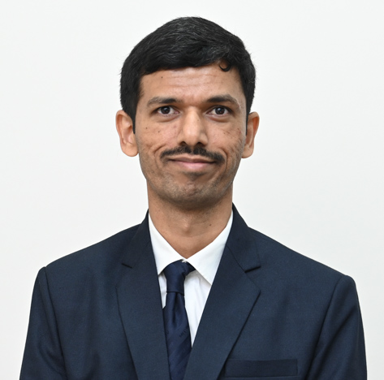
Assistant Professor
Dr. Rohit Salgude is an Assistant Professor in the Department of Civil Engineering at MIT World Peace University (MIT-WPU), Pune, with over 14 years of academic experience. He is actively engaged in teaching, research, and academic…
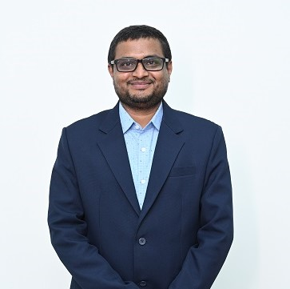
Assistant Professor
Corrosion in reinforced concrete, Fiber reinforced concrete, Steel Structures, Pervious Concrete, Ferrocement Technology, Recycled Aggregate Concrete, Concrete with Admixtures and Non-Destructive Testing
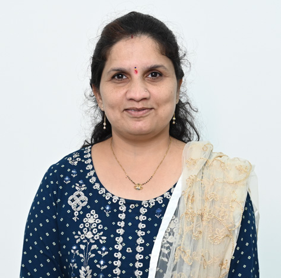
Assistant Professor
Prof. Shubhangi Shekokar is currently an Assistant Professor in the Department of Civil Engineering at Dr. Vishwanath Karad MIT World Peace University, Pune. She received her B.E. in Civil Engineering from Government College of…
Assistant Professor
Dr. Abhaysinha Gunvantrao Shelake is a dedicated Assistant Professor in the Department of Civil Engineering at Dr. Vishwanath Karad MIT World Peace University (MITWPU), Pune. With over ten years of teaching experience, he specializes in…
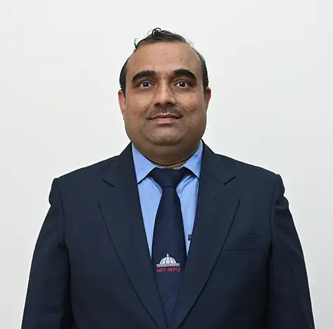
Assistant Professor
Structural Engineering , Ferrocement construction , Composite Structures , Precast constructure , Waste material based composite .Light weight concrete , Fiber Reinforced Concrete composite .
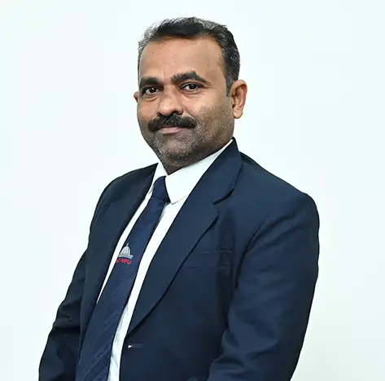
Assistant Professor
Building Energy Simulation, Building energy analysis, GIS applications.
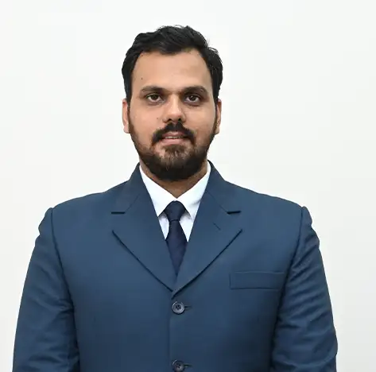
Assistant Professor
Dr. Sushrut H. Vinchurkar is an Assistant Professor in the Department of Civil Engineering at Dr. Vishwanath Karad MIT World Peace University, Pune. He received his Doctorate in Philosophy with specialization in Water Resources Engineering…
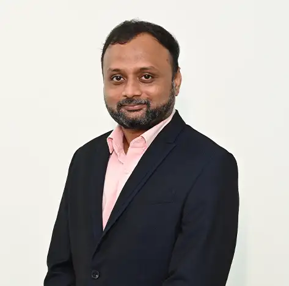
Assistant Professor
Dr. Makrand Wagale is an Assistant Professor at the Department of Civil Engineering, MIT World Peace University in Pune. He completed his B.E. in Civil Engineering from Walchand College of Engineering, Sangli, and his M.E. and Ph. D in…
Assistant Professor
Rigidity Analysis of structures, Optimization, Offshore Structures